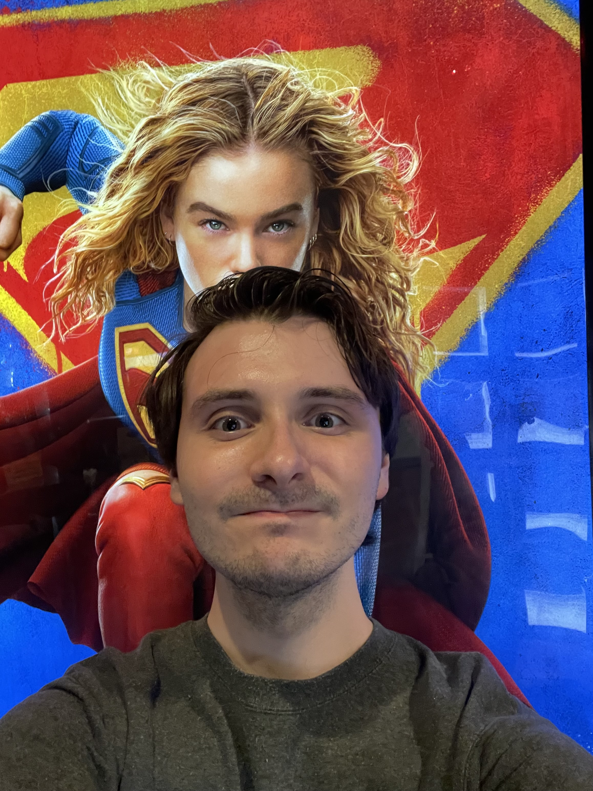

Supergirl (2026) Theater Review
I have been excited to see this movie since James Gunn announced it in 2023. I am a big fan of DC and James Gunn so I was onboard from the start. I have followed the new DCU since the beginning (Creature Commandos in late 2024), and after Superman last year, my hype for this movie was exponential. Before seeing this movie, I read Tom King's comic book "Woman of Tommorrow" to prepare and it was wonderful. After seeing the film, I would have to say I am slightly dissapointed, but also that this film is enjoyable and far from the disaster that some people on the internet claim. Milly Alcock is phenomenal as Kara Zor-El and keeps the film entertaining throughout, and Jason Momoa is great in his dream role as Lobo. The action scenes and very cool, and it is a faced paced movie throughout. My issue with the movie comes to the ending, which was a departure from the comic book and made no sense, as well as smaller things like the music choices and departure from the comic artstyle into something more similar to James Gunn's Guardians of the Galaxy movies. Overall I would recommend Supergirl to DC fans who want a fast paced action movie.Technical review
I viewed this film at my local movie theater in a 2K laser digital showing with Dolby Atmos sound. The film was shot in 8.6K on the Sony CineAlta Venice 2 by cinematography Rob Hardy, and finsihed in 4K. Other movies shot with this camera include Top Gun: Maverick, Avatar: The Way of Water, and Black Panther: Wakanda Forever. I thought for what they were going for, it was a good looking movie. The it was sharp and had good color. I wish it looked more like the vibrant comic book, but this is good too. The Dolby Atmos mix was great, maybe even better than Superman last year. It was loud and had good engagement in the surrounds and heights. I would definitely recommend seeing Supergirl in Dolby Atmos.The Verdict
Though slightly dissapointing, I couldn't help being charmed by this movie. If you love great superhero movies like me, you will most likely have a good time with this movie. Milly Alcock is fantastic in the title role, and I can't wait to see more of her in next year's Superman film, Man of Tomorrow." 3.5 stars out of 5.